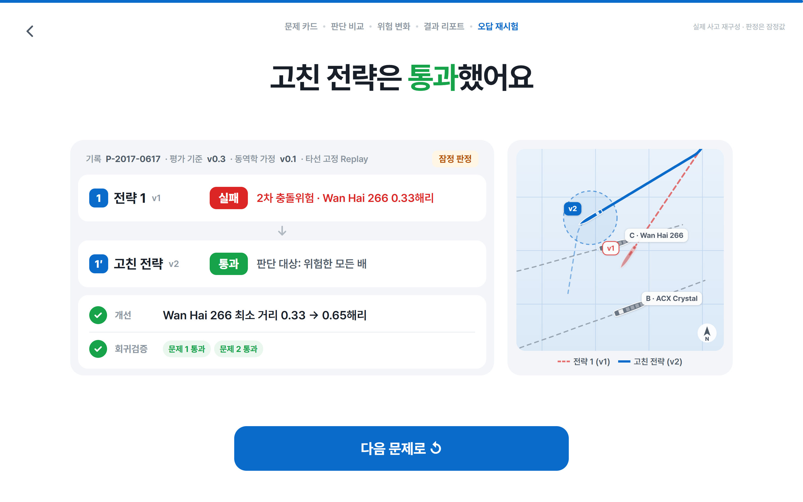
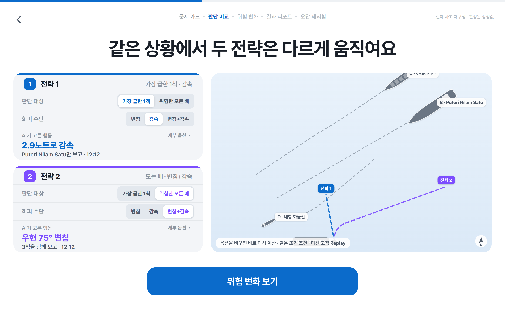
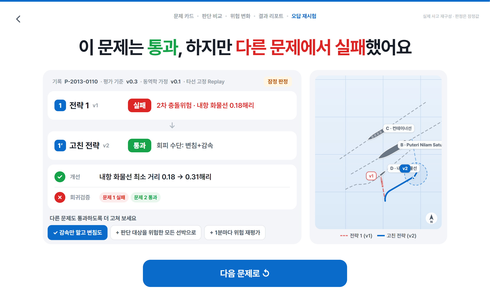

서비스 데모
실제 충돌 사고 2건을 조사보고서(NTSB·JTSB)의 AIS 위치표로 다시 만든 문제로, 자율운항 AI 전략을 브라우저에서 직접 시험하는 데모입니다. 왼쪽 옵션을 바꾸면 AI 판단, 예상 항적, 판정이 그 자리에서 다시 계산됩니다. 판정은 데모용 회피 알고리즘과 평가 기준 v0.3에 따른 잠정 판정이며, 주변 선박은 기록 항적대로만 움직입니다(타선 고정 Replay).
인터랙티브 데모 열기 → 아래 버튼이나 → 키로 진행, 지도는 휠로 확대하고 끌어서 이동
1. 문제 카드
실제 사고 조사보고서(JTSB·NTSB)의 AIS 위치표로 다시 만든 장면입니다. 오른쪽 그림은 실제 사고 항적을 재생하고, 충돌 순간을 표시합니다. 문제 1(2017 USS Fitzgerald)과 문제 2(2013 도쿄만)를 고를 수 있습니다.

2. 판단 비교
전략마다 판단 대상과 회피 수단(세부 옵션: 회피 시작 시점, 목표 통과 거리)을 바꾸면 AI가 고른 행동과 옆 지도의 예상 항적이 바로 다시 계산됩니다.

3. 위험 변화
두 전략을 같은 조건으로 동시에 실행합니다. 전략 1은 ACX Crystal만 보고 피한 뒤 Wan Hai 266에 0.33해리까지 다가가 2차 충돌위험이 됩니다.

4. 결과 리포트
안전성, 행동 진단, 운항 효율을 나눠 전략별로 판정합니다(잠정 판정). 판단 기록과 성적표 데이터(JSON)도 같은 계산에서 나옵니다.

5. 오답 재시험
수정 제안을 골라 같은 문제로 다시 실행합니다. 판단 대상을 모든 선박으로 바꾸자 Wan Hai 266과의 최소 거리가 0.33해리에서 0.65해리로 늘어 통과하고, 두 문제 회귀검증도 통과합니다.

문제 2 · 판단 비교
도쿄만 문제에서 단순 전략은 LNG선만 보고 감속합니다. 실행하면 좌현의 내항 화물선에 0.18해리까지 다가가 실패합니다. 실제 사고에서도 자선은 기관을 멈추고 후진하다 LNG선 진로에 남아 충돌했습니다.

문제 2 · 회귀검증
감속 대신 변침을 더하면 문제 2는 통과하지만, 같은 수정안을 문제 1에 돌리면 실패합니다. 판단 대상까지 고쳐야 두 문제 모두 통과합니다.
